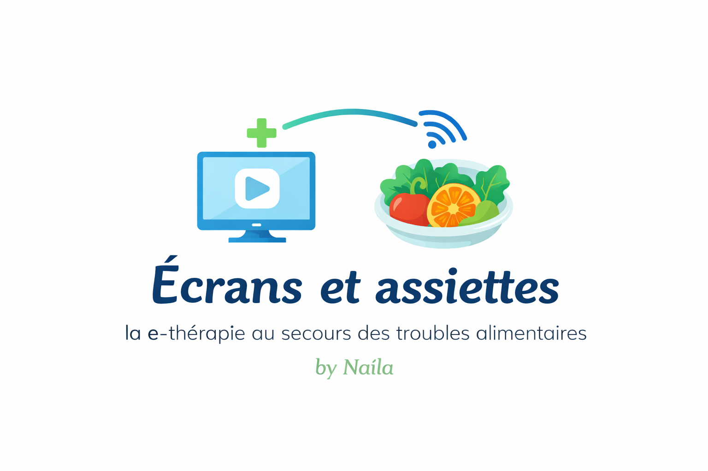

La e-thérapie au secours des troubles alimentaires
La boulimie est une maladie et non un manque de volonté. Cet espace a été conçu pour t'aider à comprendre ce que tu vis, développer des stratégies positives et progresser à ton rythme.
Commencer mon parcoursLa boulimie est un trouble du comportement alimentaire caractérisé par des épisodes de consommation excessive d'aliments accompagnés d'une perte de contrôle. Ces épisodes sont souvent suivis d'un sentiment de culpabilité et peuvent s'accompagner de comportements compensatoires.
La boulimie est une maladie qui nécessite compréhension, accompagnement et prise en charge adaptée.
Chaque petit progrès fait grandir ton arbre. Chaque étape compte.
Niveau 1 - Début du parcours
✔ Médecin
✔ Diététicien(ne)
✔ Psychologue
✔ Famille et proches
Demander de l'aide est une force et constitue une étape importante vers le mieux-être.
Une crise ne définit pas qui tu es.
Chaque petit progrès mérite d'être célébré.
Tu mérites de prendre soin de toi.